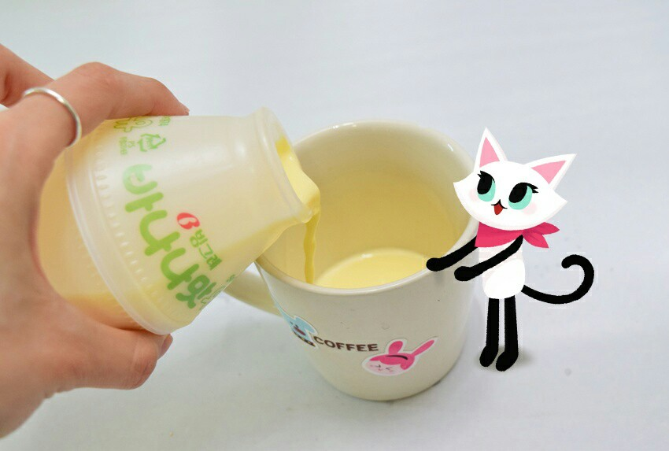
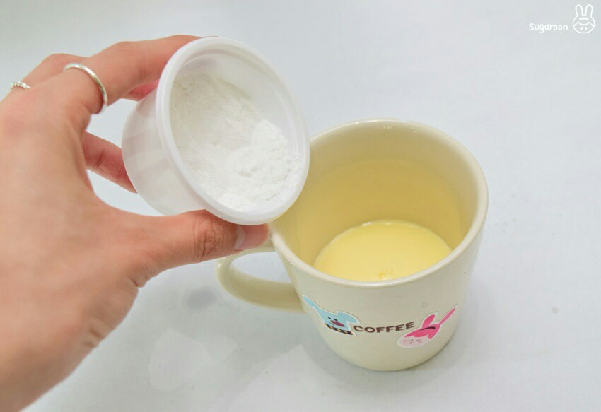
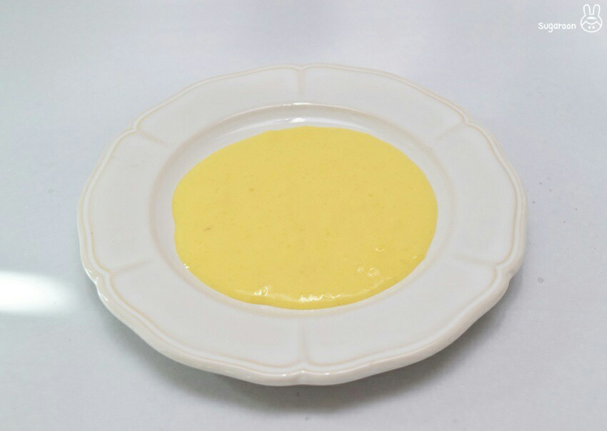
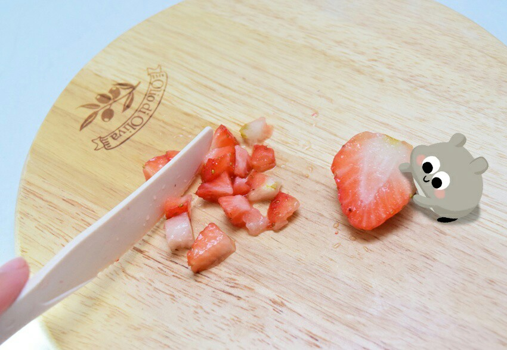
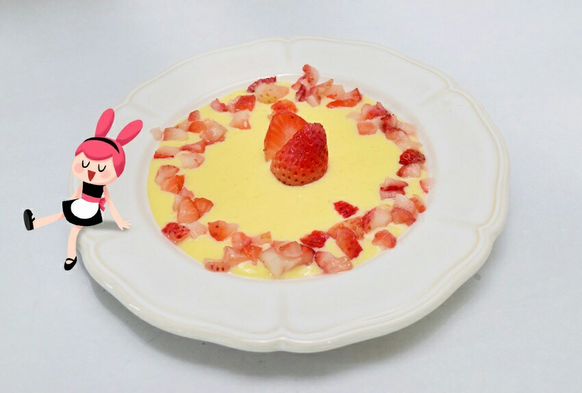

Ingredients
주 재료
- 바나나우유1개
- 딸기3개
- 전분가루1큰술
- 아몬드3개
Steps
- 바나나우유를 냄비에 부어 약한 불에 끓여주세요

- 바나나우유가 보글보글 끓기전에 전분가루 큰 한스푼을 넣고 섞어주세요

- 바나나우유가 보글보글 끓고 질감이 걸죽해졌을 때, 이렇게 그릇에 쏟아넣은 후 냉장고에서 10분 정도 차갑게 식혀주세요

- 바나나우유 푸딩이 식어가는 동안 딸기를 손질해주세요- 딸기 한개만 반으로 잘라주고, 나머지는 이렇게 잘게 조각조각 내주세요

- 딸기를 이용해 예쁘게 데코해주면 완성>_<
